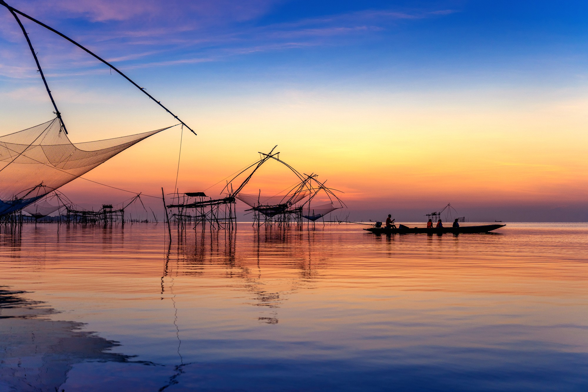
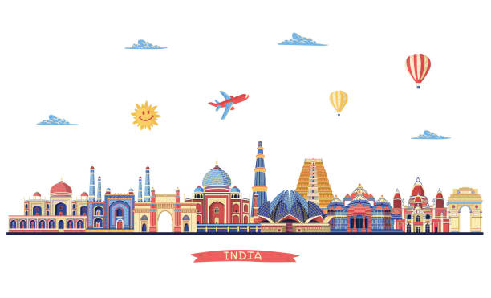

Unveiling the Jewel of the South: A Year in Review of Kerala
Nestled along the southwestern coast of India, Kerala emerges as a captivating tapestry of natural beauty, cultural richness, and timeless charm. As we reflect on a year of exploration through this enchanting region, let us embark on a comprehensive journey through Kerala's diverse landscapes, vibrant culture, and sustainable tourism initiatives.
1. Breathtaking Landscapes:
Kerala's landscapes are a study in contrasts, from the misty hills of Munnar to the tranquil backwaters of Alleppey. We began our journey amidst the verdant tea plantations of Munnar, where rolling hills blanketed in emerald green stretched as far as the eye could see. The ethereal beauty of Athirappilly Falls left us awe-struck, as cascading waters tumbled down rugged cliffs amidst a symphony of sounds.
2. Tranquil Backwaters and Houseboat Escapades:
A highlight of our Kerala journey was a serene sojourn along the backwaters of Alleppey aboard a traditional houseboat. Drifting lazily along meandering canals and placid lagoons, we were enveloped in a sense of tranquility that transcended time. As the sun dipped below the horizon, casting a golden glow across the water, we savored the flavors of Kerala cuisine served onboard, a culinary journey that celebrated the state's rich gastronomic heritage.
3. Cultural Extravaganza and Festive Revelry:
Kerala's cultural calendar is punctuated by a vibrant tapestry of festivals and celebrations that reflect the state's rich cultural heritage. We were fortunate to witness the vibrant festivities of Onam, Kerala's harvest festival, where streets were adorned with floral carpets and traditional dances filled the air with joyous rhythms. The mesmerizing performances of Theyyam and Kathakali offered a glimpse into Kerala's rich artistic traditions, while the Kochi-Muziris Biennale showcased the state's thriving contemporary art scene.
4. Sustainable Tourism and Ecological Conservation:
As responsible travelers, we were heartened by Kerala's commitment to sustainable tourism and ecological conservation. From the pristine beaches of Varkala to the lush forests of Periyar Tiger Reserve, Kerala's natural landscapes are a testament to the importance of preserving our planet's biodiversity. We were inspired by initiatives such as responsible tourism homestays and eco-friendly tourism practices, which aim to minimize the environmental impact of tourism while supporting local communities.
5. Culinary Delights and Gastronomic Adventures:
Kerala's culinary scene is a tantalizing blend of flavors, spices, and aromas that reflect the state's diverse cultural influences. We indulged in traditional Kerala meals served on banana leaves, savoring dishes such as appam with stew, fish curry, and avial. A visit to a local spice plantation offered insights into Kerala's rich culinary heritage, as we sampled fresh spices and learned about their medicinal properties.
Conclusion :
As we bid farewell to Kerala, we carry with us a treasure trove of memories that will last a lifetime. From the breathtaking landscapes to the vibrant culture and warm hospitality, Kerala has left an indelible mark on our hearts. As we reflect on our journey through the jewel of the south, we are reminded of the timeless wisdom of the ancient sages who proclaimed, "Athithi Devo Bhava" - the guest is truly akin to God. In Kerala, we found not just a destination, but a home away from home, where every visitor is welcomed with open arms and embraced as a cherished member of the family. Until we meet again, dear Kerala, may your beauty continue to inspire and your grace continue to enchant all who tread upon your hallowed shores.
